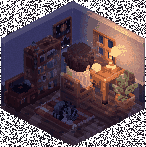
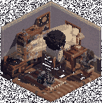
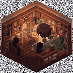
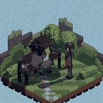
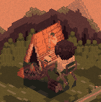
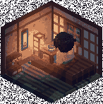
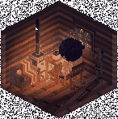

ランプの灯る部屋で、二十五分だけ。
ドット絵の小さな部屋で集中するためのタイマー。時刻に合わせて窓の光とランプの影が動き、集中を重ねるほど部屋に物が増え、行ける場所が開いていく。
ログインは要りません。記録は開いたブラウザの中にだけ残り、どこにも送りません。

行ける場所は、六つ。
はじめは部屋とブックカフェの二つ。集中した時間の合計で、残りが順に開いていく。

自分の部屋
はじめから
猫がいて、模様替えができる。

本に囲まれたブックカフェ
はじめから
壁一面の本とペンダントの灯り。音はカフェのざわめきに切り替わる。

昼の公園
合計 15 時間で開く
ベンチと池と木陰。夕方になると街灯がともる。

山のキャンプ場
合計 30 時間で開く
テントと焚き火、草原を流れる川。夜は星が出る。

和室の縁側
合計 50 時間で開く
行灯と障子、庭の石灯籠。九月と十月の夜は鈴虫が鳴く。

雪の山小屋
合計 80 時間で開く
薪ストーブの火が揺れ、窓の外は雪をかぶった森。
二十五分のあいだに起きること。
集中を邪魔しないように、変化は小さく、ゆっくり、まれに。大きな変化は休憩に回す。
- 0 分
部屋に入ると、題字の光の粒が机のランプへ飛んで、灯りがともる。
- 5 分ごと
机の紙が一枚ずつ増え、マグから湯気が立つ。窓にはときどき雲が流れる。
- 15 分・20 分
残り十分と残り五分で、柔らかい音が一度ずつ鳴る。消音中は鳴らない。
- 25 分
完了の音のあと、休憩。主人公は椅子にもたれ、猫は伸びをして、窓の光が少し明るくなる。
続けた分だけ、部屋に残る。
減るものはない。休んだ日があっても、数は戻らない。
- 旅の絵葉書
- 部屋の外の場所で五回集中するたびに、その場所の絵葉書が一枚届き、部屋の壁に貼られる。
- 本棚の本
- どこで集中しても、十回ごとに背表紙が一冊増える。
- スタンプ帳
- 集中した日に、暦へ朱の「済」が押される。
今日の二十五分を、灯りのそばで。